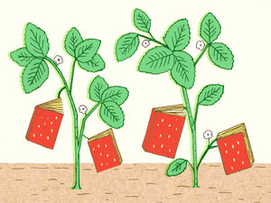

Shop for the Best
with our carefuly centerd vender list,you will know what to buy
-
TasteMakers
feayourfiserttest
-
Blog
blogdescriebthee
-
The A-list
Headerpciker felte
-
Contribute
contriebute for ted
sign up for your newsletter to receiver a selection of the videos,recipes and news ,deiverled weekly to you
- 
2012's Bestt Summer Cookbooks
with the best of the reason comming form "orgins,farms and gradens" NPR has Put togger an impressive collection of to summer cookbooks
-
How to Make Vegetable Chips
with the best of the reason comming form "orgins,farms and gradens" NPR has Put togger an impressive collection of to summer cookbooks and vegettables ....
-
Join us on Pinterest
Put togger an impressive collection of to summer cookbooks and vegettables

Recipes from a Sunday Supper
Put togger an impressive collection of to summer cookbooks and vegettables togger an impressive collection of to summer cookbooks